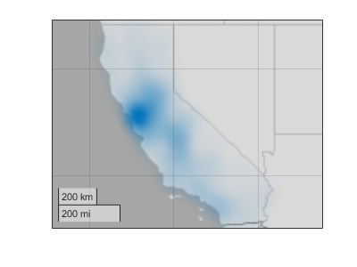
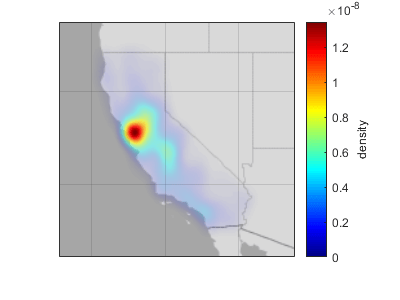
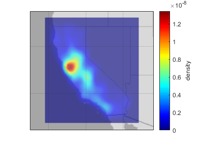

geodensityplot
Density plot in geographic coordinates
Syntax
Description
geodensityplot(
creates a density plot in geographic coordinates. Specify the latitude coordinates
in degrees using lat,lon)lat, and specify the longitude coordinates in
degrees using lon. If the current axes is not a geographic
axes, or if there is no current axes, then the function creates the density plot in
a new geographic axes.
geodensityplot( plots
into the geographic axes specified by gx,___)gx. Specify the axes as
the first argument followed by any of the input argument combinations in the
previous syntaxes.
geodensityplot(___,
specifies properties of the density plot using one or more name-value arguments. For
a list of properties, see DensityPlot Properties. Name=Value)
dp = geodensityplot(___) returns the
DensityPlot object. Use dp to set properties
after creating the plot. For a full list of properties, see DensityPlot Properties.
Examples
Load a table containing cell tower data for California. Each table row represents a cell tower. The table variables include data about the cell towers, such as the latitude and longitude coordinates. Extract the latitude and longitude coordinates from the table.
load cellularTowers.mat
lat = cellularTowers.Latitude;
lon = cellularTowers.Longitude;Create a density plot from the coordinates. By default, the geodensityplot function visualizes density by varying the transparency of the plot. Regions with high density are more opaque, and regions with low density are more transparent.
figure geodensityplot(lat,lon)

Load a table containing cyclone track data. The table includes the locations and wind speeds of over 200 cyclones, measured at six-hour intervals. Extract the latitude coordinates, the longitude coordinates, and the wind speeds from the table.
load cycloneTracks.mat
lat = cycloneTracks.Latitude;
lon = cycloneTracks.Longitude;
windspeed = cycloneTracks.WindSpeed;Create a density plot from the coordinates, and weight the points using the wind speeds. The resulting density plot highlights the areas where the cyclones have the highest wind speeds.
geodensityplot(lat,lon,windspeed)

This example uses modified RSMC Best Track Data from the Japan Meteorological Agency.
Load a table containing cell tower data for California. Each table row represents a cell tower. The table variables include data about the cell towers, such as the latitude and longitude coordinates. Extract the latitude and longitude coordinates from the table.
load cellularTowers.mat
lat = cellularTowers.Latitude;
lon = cellularTowers.Longitude;Create a density plot from the coordinates. Specify the radius of influence for each point as 50 km.
geodensityplot(lat,lon,Radius=50e3)

By default, the geodensityplot function visualizes density by varying the transparency of the density plot. You can also visualize density by varying the plot colors.
Load a table containing cyclone track data. The table records the tracks of over 200 cyclones, measured at six-hour intervals. Extract the latitude and longitude coordinates from the table.
load cycloneTracks.mat
lat = cycloneTracks.Latitude;
lon = cycloneTracks.Longitude;Create a density plot from the coordinates. Vary the plot colors by setting the FaceColor property to "interp".
geodensityplot(lat,lon,FaceColor="interp")Change the colormap, and add a labeled color bar. When you do not weight the data, the units of the density plot are points per square meter. Note that the plot visualizes the density using both transparency and color.
colormap turbo c = colorbar; c.Label.String = "Data points per square meter";

This example uses modified RSMC Best Track Data from the Japan Meteorological Agency.
Input Arguments
Name-Value Arguments
Specify optional pairs of arguments as
Name1=Value1,...,NameN=ValueN, where Name is
the argument name and Value is the corresponding value.
Name-value arguments must appear after other arguments, but the order of the
pairs does not matter.
Example: geodensityplot(lat,lon,FaceColor="g") sets the face
color of the density plot to green.
Before R2021a, use commas to separate each name and value, and enclose
Name in quotes.
Example: geodensityplot(lat,lon,"FaceColor","g") sets the face
color of the density plot to green.
Note
Use name-value arguments to specify values for the properties of the
DensityPlot object created by this function. The properties
listed here are only a subset. For a full list, see DensityPlot Properties.
Radius of influence on the density calculation, in meters, specified as a numeric scalar.
Face transparency, specified as one of these values:
'interp'— Use interpolated transparency based on the density values.Scalar in the range [0, 1] — Use uniform transparency across all the faces. A value of
1is opaque and a value of0is completely transparent. Values between0and1are semitransparent.
The appearance of the density plot depends on both the FaceAlpha and FaceColor properties. This table shows how different combinations of FaceAlpha and FaceColor affect the appearance of the plot.
Values of FaceColor and FaceAlpha | Effect | Sample Density Plot |
|---|---|---|
| The density plot uses one color and conveys density by varying the transparency. |
 |
| The density plot conveys density by varying the transparency and the color. |
 |
| The density plot uses one transparency value and conveys density by varying the color. |
 |
For more information about controlling the transparency of a density plot, see Adjust Transparency of Geographic Density Plots.
Face color, specified as one of these options:
'interp'— Use interpolated coloring based on the density values. MATLAB® chooses colors from the colormap of the parent axes. When you choose this option, the appearance of the density plot also depends on the value of theFaceAlphaproperty. For more information, see theFaceAlphaproperty.An RGB triplet, a hexadecimal color code, a color name, or a short name — Apply one color to the density plot. When you choose this option, the value of
FaceAlphamust be"interp".
RGB triplets and hexadecimal color codes are useful for specifying custom colors.
An RGB triplet is a three-element row vector whose elements specify the intensities of the red, green, and blue components of the color. The intensities must be in the range
[0,1]; for example,[0.4 0.6 0.7].A hexadecimal color code is a character vector or a string scalar that starts with a hash symbol (
#) followed by three or six hexadecimal digits, which can range from0toF. The values are not case sensitive. Thus, the color codes"#FF8800","#ff8800","#F80", and"#f80"are equivalent.
Alternatively, you can specify some common colors by name. This table lists the named color options, the equivalent RGB triplets, and hexadecimal color codes.
| Color Name | Short Name | RGB Triplet | Hexadecimal Color Code | Appearance |
|---|---|---|---|---|
"red" | "r" | [1 0 0] | "#FF0000" |
|
"green" | "g" | [0 1 0] | "#00FF00" |
|
"blue" | "b" | [0 0 1] | "#0000FF" |
|
"cyan"
| "c" | [0 1 1] | "#00FFFF" |
|
"magenta" | "m" | [1 0 1] | "#FF00FF" |
|
"yellow" | "y" | [1 1 0] | "#FFFF00" |
|
"black" | "k" | [0 0 0] | "#000000" |
|
"white" | "w" | [1 1 1] | "#FFFFFF" |
|
This table lists the default color palettes for plots in the light and dark themes.
| Palette | Palette Colors |
|---|---|
Before R2025a: Most plots use these colors by default. |
|
|
|
You can get the RGB triplets and hexadecimal color codes for these palettes using the orderedcolors and rgb2hex functions. For example, get the RGB triplets for the "gem" palette and convert them to hexadecimal color codes.
RGB = orderedcolors("gem");
H = rgb2hex(RGB);Before R2023b: Get the RGB triplets using RGB =
get(groot,"FactoryAxesColorOrder").
Before R2024a: Get the hexadecimal color codes using H =
compose("#%02X%02X%02X",round(RGB*255)).
Tips
When you plot on geographic axes, the
geodensityplot function assumes that coordinates are referenced to the
WGS84 coordinate reference system. If you plot using coordinates that are referenced to a
different coordinate reference system, then the coordinates might appear misaligned.
Algorithms
A density plot is a surface with varying transparency. The
geodensityplot function creates the surface by calculating a
cumulative probability distribution from the specified points and varying the
transparency with the density of the points.
By default, each point contributes equally to the density plot. When you weight the points, the function multiplies the contribution of the associated points to the density plot.
Version History
Introduced in R2018bSee Also
Functions
Properties
1 Alignment of boundaries and region labels are a presentation of the feature provided by the data vendors and do not imply endorsement by MathWorks®.